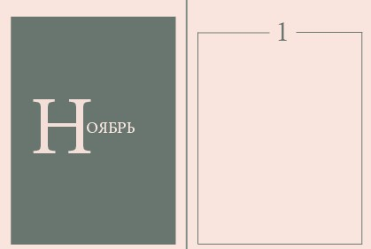

Немного старше
Влада - обычная девушка. Её жизнь насыщена событиями и эмоциями, а вокруг неё близкие и родные люди, готовые сделать всё для неё. Но Влада не испытывает счастья. На протяжении книги она пытается найти его, и заполнить оставшуюся 1/4 своего сердца. Имея всё, она теряет себя, и доходит до дна своего морального состояния. Выберется ли она из него?
- Это книга, меняющая представление о романтизме юношества, и поднимающая тему подростковых зависимостей.
- Авторские иллюстрации в сочетании с растровыми картинками.
- Книга поднимает важные темы подросткового периода. Все проблемы пубертата на страницах одной книги.
- Постпечатная обработка включает в себя хэндмэйд техник. на страницах сочетаются коллажирование, скрапбукинг, шитьё красными нитями. После прочтения издание будет служить чудесным артбуком для удовлетворения эстетических запросов аудитории.